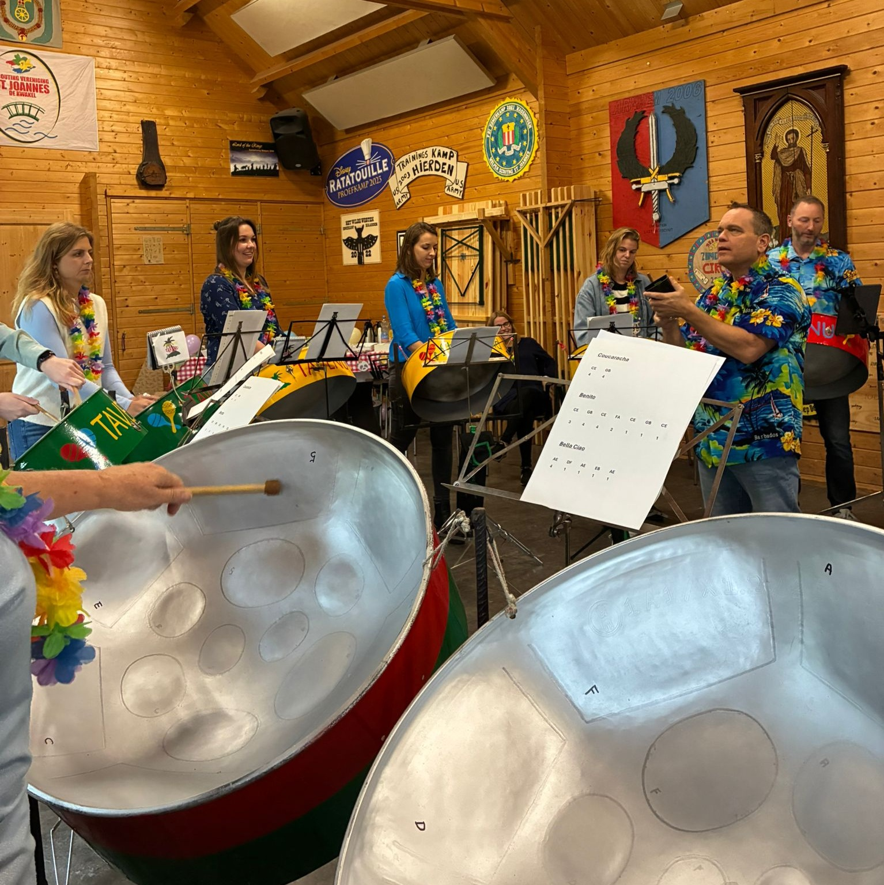
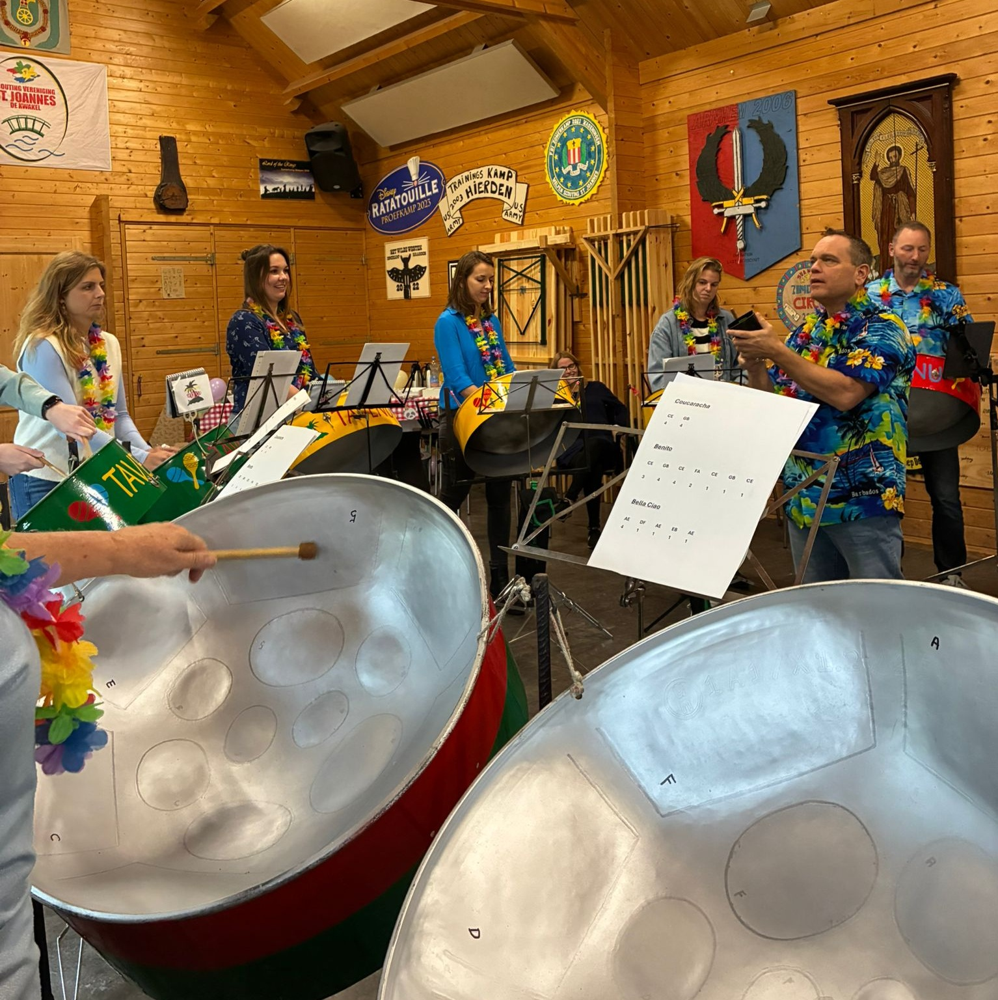
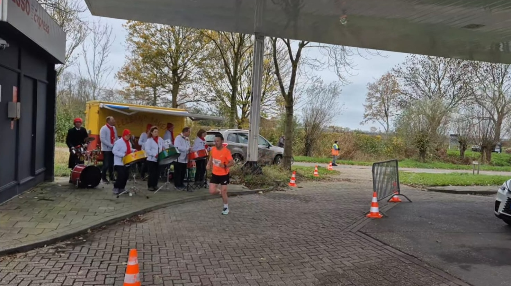
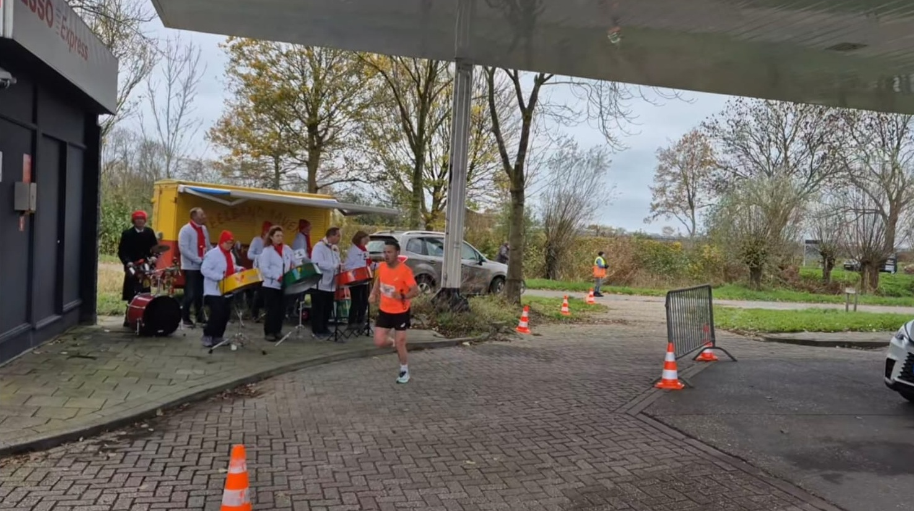
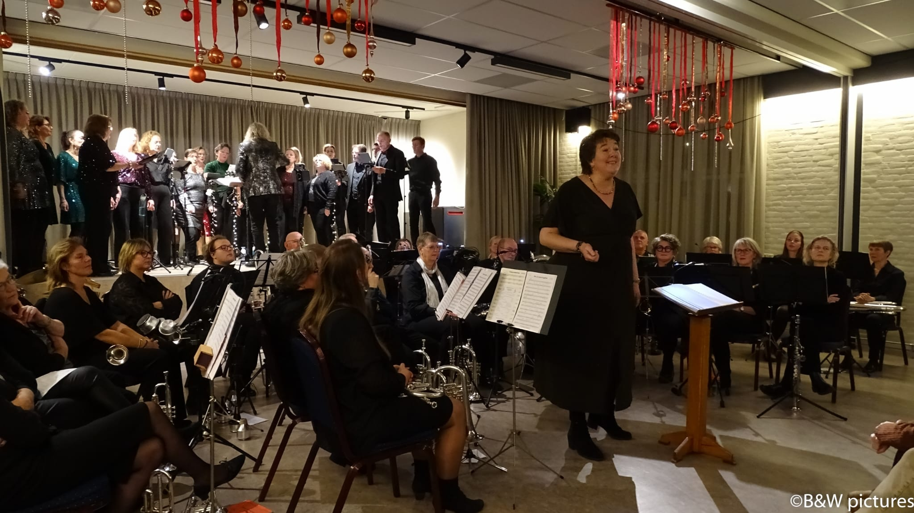
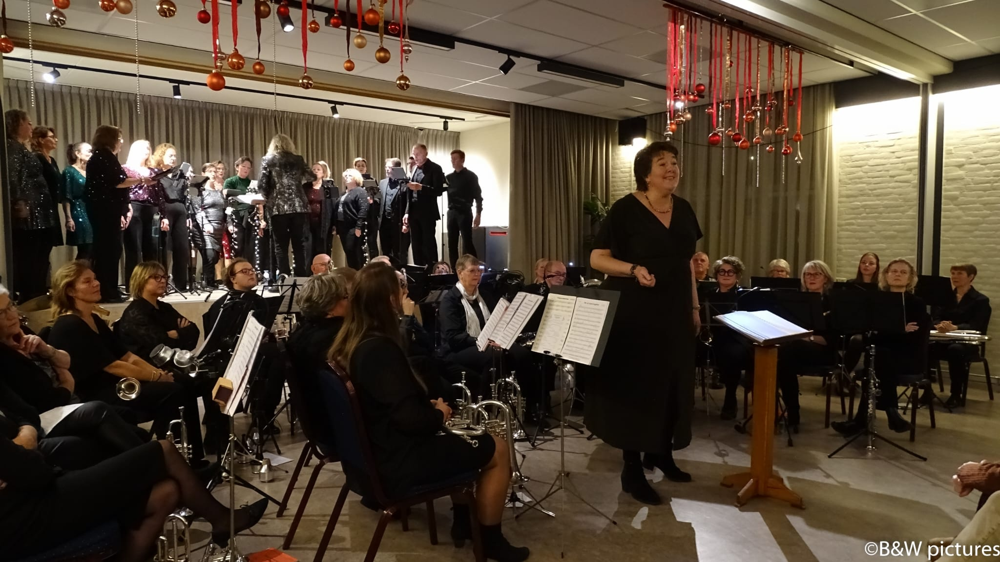

De zomer is natuurlijk uitermate geschikt om de steelband in te huren. Maar ja, ook de steelbandleden gaan dan op vakantie. Dus om genoeg mensen te verzamelen om een kwalitatief goed optreden te kunnen verzorgen is dan ook wel wat moeilijker om te realiseren. Zo hadden we dus een optreden aan het begin van de vakantie, en eentje aan het einde van de vakantie. De repetitie-loze weken zaten daar dus precies tussenin.
Op zaterdag 19 juli hebben we opgetreden op het Mamjo-festival bij De Scheg in Uithoorn. Dit was een multicultureel gebeuren, met optredens, eten en kraampjes van allerlei pluimage uit de gemeente. Vooraf was duidelijk gemaakt dat er een strak schema was op het podium, dus de op- en afbouw voor en na het optreden moest je meenemen in je speeltijd. Wij hadden dus een strak speelschema gemaakt, zodat we snel er op en eraf konden en toch zoveel mogelijk konden spelen. Ter plekke liep het al uit, maar de modeshow voor ons ging een stuk sneller, en wij konden aardig op tijd beginnen. Toen ons lijstje afgewerkt was, konden we nog wel een nummer spelen, en daarna nog eentje, en daarna nog eentje, en uiteindelijk hebben we wel 20 minuten langer gespeeld. Met een groepje zouden we nog even blijven en daar gaan eten, want het programma zag er heel leuk uit. Maar in het echt viel het tegen, we hebben alleen nog wat van een brassband kunnen genieten aan het einde.
Op donderdag 21 augustus waren we gevraagd om te komen spelen op een feestje in Het Hoge Heem in Uithoorn. Er was een medewerker maar liefst 45 jaar in dienst, en dat moest gevierd worden. Dus met een wel heel klein groepje zijn we daar even een half uurtje geweest. Ondanks het kleine aantal muzikanten was het toch een goed optreden, en het verhoogde zeker de feestvreugde.
Zoals elk jaar is er begin september kermis in De Kwakel, en uiteraard doet de steelband dan ook altijd mee. Het begint op zondag met de kinderoptocht. De karren van de steelband worden dan naar Vlasman op het dorp gereden, waar we de grote kar gaan opbouwen, en in de kleine kar kunnen de koffers staan. Ondertussen zijn de kinderen allemaal al naar het centrum gekomen om daar gejureerd te worden, en ze worden in categorieën verdeeld. Er waren weer heel veel deelnemertjes, met erg leuke creaties. Tegen 1 uur komen wij dan aanrijden, en kan de optocht van start gaan. Eerst over het Kwakelse Pad, Ringdijk, Zwarte Dorp en Boterdijk terug naar het centrum. Daar krijgt iedereen een pakje drinken en een zakje chips. Wij rijden dan verder de Drechtdijk op, om daar ergens te keren. Nadat alle versnaperingen op zijn gaan we weer rijden over het Kwakelse Pad, dan de Kuil in helemaal naar achteren tot aan de kermis. Daar nog even spelen, en dan verder over het Hanepad en de Vuurlijn terug naar Vlasman. Daar de kar weer inklappen en even een biertje/wijntje nemen.
Dit jaar moesten we meteen door naar de roeivereniging langs de Amstel, want daar was een feestje van de zus en zwager van Marguerite, en zij hadden gevraagd of we met de steelband ook eventjes wilden komen spelen. Daar hebben we even boven gestaan met de loopsteelband, en ook daar kregen we nog een lekker drankje.
Dan de dinsdag. De dag van de grote optocht. Om 7 uur moest de kar al aan de Ringdijk staan, omdat we er anders niet meer door kunnen. Daar ter plekke de kar opgebouwd en versierd, want het was de verjaardag van Lennie, en die reed ook met ons mee, samen met dochter Floor. Daarna even alvast wat karren gaan kijken, en zo tegen 9 uur gingen we van start. Eerst over de Vuurlijn richtring Uithoorn, dan de Watsonweg en de Boterdijk terug naar De Kwakel. Op het dorp hebben we Blikkendag gespeeld, want dat levert ons donateurs op. Daarna over het Kwakelse Pad naar de Kuil, en na het rondje door de Rozenlaan gemaakt te hebben, is het tijd voor ons om ook de optocht te kunnen kijken. Er zaten weer vele leuke karren bij, zelfs Paus Leo deed mee! Nadat alle karren de Kuil in zijn, kunnen wij er weer door en gaan we de Kuil weer uit over het Kwakelse Pad naar de Drechtdijk. Halverwege moet dan iedereen van de karren af, dus daar ruimen wij meteen alles weer op. Instrumenten in de koffers en in de kleine kar, die wordt meteen naar Kudelstaart gereden en uitgeladen. De grote kar weer inklappen en die gaat terug naar Nieuwveen. Na afloop dan nog even lekker naborrelen en heerlijk eten bij Conny in de tuin met z’n allen.
Ton Hoogenboom was deze kermis onze chauffeur, daarvoor nog hartelijk dank!
De zomervakantie achter de rug en een nieuw seizoen bij Tavenu. Daar hoort natuurlijk ook een gezelligheidsdag bij.
Op zondag 7 september waren alle leden uitgenodigd. We begonnen met een foto puzzeltocht door De Kwakel. Door lootjes trekken werden er groepjes gevormd. En natuurlijk zat ik in een hele gezellige groep. Veel gekletst en gelachen om de foto’s die we maakten en door moesten sturen naar de organisatie. Helaas net niet gewonnen.
Na de speurtocht was het tijd om met iedereen te kletsen, hadden prachtig weer waardoor we lekker buiten konden zitten bij het scoutinggebouw in De Kwakel. Op een gegeven moment werd ik geroepen om even mee te komen en moest plaatsnemen op een mooie zelfgemaakte troon, deze werd getild door 4 sterke mannen. Ik zat iets scheef, het wiebelde behoorlijk maar mocht tegelijk niet te veel bewegen, vond het spannend maar eigenlijk ook heel erg leuk. Voor de troon liepen de (verklede) majorettes. Ik werd gehuldigd omdat ik 40 jaar lid ben.
Ja, ik werd echt in het zonnetje gezet. Koos deed een mooi woordje over mijn 40-jarig lidmaatschap en van Jolanda kreeg ik het 40 jarig-speldje opgespeld. Met het bos bloemen en de foto collage erbij was ik helemaal door iedereen verrast.
40 jaar lid klinkt heel lang, terwijl het niet zo voelt. Ben rond mijn 8e jaar begonnen met majorette. Al vrij snel heb ik muziekles op de bugel genomen. Op een gegeven moment deed ik met verschillende uitvoeringen allebei tegelijk. Over mijn majorette pakje deed ik dan het muziekjasje aan en snel tussen het orkest inzitten. De jaren op de bugel zijn voorbij gevlogen. Voordat je het weet, ben je dus 40 jaar lid.
De gezelligheidsmiddag was met eten. Inmiddels stond er een heerlijk lopend buffet te pruttelen en mocht ik als eerste met mijn gezin daarvan gaan smullen. Maar natuurlijk nam ik Jan en Lettie ook mee, die waren eerder dit jaar ook gehuldigd. Wat troffen wij het, dat je zelfs begin september met het eten ook heerlijk buiten kon zitten. Dit maakte het ook zo leuk, dat er veel van plek werd gewisseld, zodat je iedereen even kon spreken.
Iedereen bedankt voor deze gezelligheid(sdag), want door jullie is mijn 40-jarig lidmaatschap ook gelukt. En met z’n allen op naar de 50 😊.
Groetjes Miranda
Op zaterdag 27 september was er weer Burendag. We waren gevraagd om in een wooncomplex in de Westwijk in Amstelveen te komen spelen. Het waren seniorenwoningen waarbij wel iedereen zelfstandig woont, maar er wel wat faciliteiten aanwezig zijn, zoals gezamenlijk eten in een grote aula, voor de liefhebber. Deze dag was er ook allerlei leuks georganiseerd, waaronder een taartenbak wedstrijd. Wij moesten vanaf 2 uur iedereen “optrommelen” om gezellig mee te komen doen met de activiteiten. Eerst hebben we dan ook in de centrale hal gespeeld. Later ook nog een keer in de aula, waar toen de meeste mensen zaten. Uiteraard hebben wij ook wel diverse taarten geproefd, want er was genoeg! Na afloop kregen we ook allemaal nog een lekker ijsje, dus voor ons was het een zeer geslaagde middag.
Al een paar jaar voor de corona hadden we een paar keer de vraag gehad of we ook workshops gaven met de steelband. Toen met “nee” geantwoord, maar er begon wel wat te broeien. Dus maar eens even goed over nagedacht hoe we dat zouden kunnen doen. In 2018 hebben we toen een probeer-workshop gedaan. We hadden toen de ouders van de leerlingen uitgenodigd om mee te doen, wat mensen van andere muziekverenigingen, en nog wat andere familieleden. 4 nummers uitgezocht die we dan gingen instuderen. 2 muzikanten van de steelband die de melodie spelen, en een paar anderen die de gasten helpen met aanwijzingen. Dat was toen best een geslaagde dag, en we hoopten dat er dan ook regelmatig workshops geboekt zouden worden. Voor de Kwakelse veiling hadden we ook een workshop aangeboden, en die is toen gekocht door iemand die op een dagbesteding werkte. Voor die mensen was de workshop net even iets te moeilijk, dus hebben we zelf ook gewoon wat gespeeld en was het evengoed een geslaagde middag. Maar na deze 2 workshops werd er nooit meer om gevraagd.
Tot begin dit jaar, toen kwam de drumband uit Zaandijk met de vraag of we een workshop wilden geven op hun gezelligheidsmiddag in oktober. En net voor de zomervakantie kwam er nog een aanvraag binnen, voor een workshop op een familie-reünie. Dat viel echter tegelijkertijd met de gezelligheidsdag van Tavenu. Maar ze hadden er zoveel zin in, dat ze de reünie gewoon een week verzet hebben! En begin oktober kwam er ook nog een derde aanvraag voor een workshop, voor een groep meiden uit De Kwakel die een babyshower aan het organiseren waren.
Op 14 september gingen we dus met een aanhanger vol instrumenten naar Ter Aar, waar de familie-reünie werd gehouden. Met Ilonka en Claudia die de melodie speelden, en Koos, Marguerite, Conny, Sylvia en Jolanda voor de begeleiding, werden onder leiding van Sander 3 nummers ingestudeerd: Coucaracha, Benito en Bella Ciao. Het was reuze gezellig en de oudste deelnemer was al in de 90.
12 Oktober was de workshop in Zaandijk, in het clubgebouw van Drumband De Saen. Met dezelfde groep hebben we ook daar 4 nummers gespeeld. Omdat hier iedereen al wel muzikaal was, ging het iets vlotter allemaal en hebben we ook Lambada gespeeld. Om 4 uur was de aanhang van de leden uitgenodigd om te komen kijken, en hebben we eerst die 4 nummers laten horen aan het publiek, en daarna hebben we zelf nog wat gespeeld. Ook een zeer geslaagde middag dus.
En op 1 november was er een workshop in het scoutinggebouw in De Kwakel. 12 meiden en 2 aanstaande oma’s hebben ook fijn op de pannen gespeeld. Ze hadden gevraagd of we ook een kinderliedje konden gaan instuderen met ze, en dat werd een Surinaams liedje die we in ons repertoire hebben: Bigi Kaiman. Hiermee kwam Lambada te vervallen, en dat is meteen ons plan voor een volgende workshop. Dit keer waren we met een iets kleinere groep: Koos, Marguerite, Conny, Jolanda, Remon en Sander. Maar ook met deze workshop was het heel erg gezellig.
Nu we de smaak te pakken hebben, hopen we natuurlijk op nog veel meer workshops in de (nabije) toekomst!

 

Zoals elk jaar mocht de steelband weer meedoen met de Sinterklaasintochten in Amstelveen, Nieuwkoop en Baarn. Alleen dit jaar weer eens als pieten. Na de verplichte afschaffing van zwarte piet hebben we de afgelopen jaren als gewone steelband meegereden in de optochten. Maar de organisaties zagen graag weer een pietensteelband. Dus dit jaar voor het eerst als roetveegpieten meegedaan. Oke, het heeft zo z’n voordelen: je bent veel sneller klaar met schminken, een paar halen over je gezicht en klaar is piet. Ook het afschminken gaat veel sneller, en je loopt niet nog de hele week als een gothic rond met zwarte ogen. Nadeel natuurlijk dat het er niet uitziet en weer een Nederlandse traditie om zeep is geholpen. Maar goed, de kindertjes langs de kant vinden het allemaal prima, als je ze maar pepernoten geeft. Alleen die hebben wij niet, wij strooien alleen met muzieknoten.
Op zaterdag 15 november moesten we om 8 uur aanwezig zijn in Amstelveen om daar eerst de kar op te bouwen, en daarna moeten we natuurlijk nog omkleden. Door problemen met het paard ging de stoet iets later van start dan gepland, maar het was weer goed druk langs de route. Het is altijd wel een rit van zo’n 5 kilometer door Amstelveen heen, en aan het einde van de tocht bij het stadshart wordt er ook nog van alles georganiseerd. Maar dat maken wij nooit mee, want wij rijden meteen door naar de opbouwplek om af te bouwen.
En natuurlijk om als de sodemieter naar Nieuwkoop te rijden, want daar moeten we ook voor half 3 klaar staan op het plein. Niet alleen omdat de boot dan in zicht komt, maar meer vanwege de drukte op het plein, en we willen natuurlijk niemand omver rijden. Op het plein zelf worden de kinderen altijd prima vermaakt, en wij zijn er dan eigenlijk alleen om Sinterklaas en zijn gevolg te begeleiden naar de sporthal.
De week er na is Baarn aan de beurt. Hier werden we om 10 uur verwacht op de parkeerplaats achter het theater. Eerst weer de kar opbouwen en daarna met z’n allen naar de school om om te kleden en te schminken. Daarna met alle karren naar het begin van de intocht, en dan is het wachten tot de Sint er is. Met gezellige Sinterklaasmuziek op, is het wel gezellig en vol te houden. Daarna nog een dikke 2 uur rondrijden en spelen. En jeetje, wat een hoop mensen langs de route! Echt een heel erg gezellige intocht! Na afloop werden we verwend met broodjes kroket en frikandel en verwarmende drankjes. En dan nog terug naar Nieuwveen en Kudelstaart om alles weer op te ruimen. Maar wel weer genoten van de optredens.
Omdat bij de Sinterklaasmedleys het wel heen fijn is om er een slagwerker bij te hebben om de stille stukjes in te vullen, hadden we Jan Kuil van Bovenkerk weten te strikken om met ons mee te doen. Jan, ontzettend bedankt!
Normaal gesproken worden aanvragen voor een optreden overdag op een werkdag afgewezen. Er zijn natuurlijk altijd wel uitzonderingen. Bijvoorbeeld als een collega van onze voorzitter Koos belt met de vraag of we op Koos’ afscheidsfeestje kunnen komen spelen. Want Koos heeft de achter-de-geraniums-zitten-gerechtigde-leeftijd behaald en is met pensioen gegaan. Dat wilden ze in het gemeentehuis in Mijdrecht natuurlijk wel even vieren met een borrel. En het liefst met de steelband er bij, want daarover heeft hij ongetwijfeld flink zitten opscheppen al die jaren dat hij daar werkte. Het was voor ons natuurlijk wel moeilijk om een groep bij elkaar te krijgen, want niet iedereen kan zomaar even wat eerder weg van het werk. Maar we waren met net genoeg om een paar nummertjes te kunnen spelen, en we hadden gewoon de pan van Koos zelf ook meegenomen, dus toch nog een extra speler. En zijn collega’s konden nu met eigen ogen zien hoe leuk Koos het altijd heeft met de steelband.
Nou Koos, geniet van je pensioen en al je extra vrije tijd!
Een serenade voor Tavenu-leden is altijd leuk natuurlijk. Zo waren in september Remon en Lennie alweer 20 jaar getrouwd, en dat vierden zij met een groot feest, en daar waren ook heel wat muzikanten voor uitgenodigd. Dus toen alle gasten wel zo’n beetje binnen waren in Nieuw Vennep, brachten eerst de aanwezige blazers even wat nummers ten gehore, met aansluitend de steelband. En het bleef nog lang gezellig!
Ons optreden in het gemeentehuis in Mijdrecht voor Koos was niet de enige keer dat we daar gespeeld hebben. De burgemeester van De Ronde Venen schijnt namelijk fan van ons te zijn, en in november gaf hij er de brui aan, en ging net als Koos met pensioen. Er werd een groot afscheid voor hem georganiseerd, en wij kregen de eer om hem “eruit te slaan”. Aan het einde van de avond (tegen 10 uur pas) kwamen wij even wat nummertjes spelen en daarna was het dus einde oefening voor de burgemeester.
Op zondag 15 november, tussen de Sinterklaasintochten in, was het weer tijd voor de marathon van De Ronde Venen. Wij staan elk jaar ongeveer halverwege de route bij de benzinepomp in Amstelhoek. En koud dat het was! Ik snap dat de deelnemers hard liepen, zo bleven ze nog een beetje warm, en des te eerder waren ze weer terug. Martin, nog bedankt dat je na je eigen optreden in je jurk ook nog even gezellig met ons mee kwam doen!
Het laatste optreden van de steelband dit jaar was op een verjaardagsfeestje in het dorpshuis. Ze hadden als thema “tropisch” gekozen, en daar pasten wij goed bij natuurlijk. We hebben daar een klein half uur gespeeld en de stemming zat er goed in.
 

Het is altijd een beetje gek om in september al kerstnummers te gaan spelen. Gelukkig heeft het weer geleid tot een mooi en gezellig kerstconcert. De zaal was lekker vol en de meeste mensen hebben genoten, heb ik gehoord uit betrouwbare bronnen!
De avond werd dit jaar gevuld door muziek van Tavenu en door het popkoor Da Capo uit Uithoorn. Wij openden met een serieus nummer De Zwaanriddersage ingeleid door het verhaal achter het stuk door Thomas. Het intensief repeteren van dit stuk heeft goed uitgepakt en resulteerde in een mooie uitvoering. Ik was toch wel een beetje afgeleid en vergat toch ergens in te zetten en toen was ik de draad een beetje kwijt, oeps! We maakten dit eerste blok af met Hallelujah en When a child is born.
Daarna volgde een blok van het koor waarbij er af en toe lekker meegezongen kon worden. Mooie en afwisselende nummers, alles a capella, knap hoor!
Na de pauze nog een blok van ons met de bekende kerstnummers, Last Christmas, Merry Christmas everyone, All I want voor Christmas is you en Rudolph. Gevolgd door een blok van Da Capo met onder andere Mag ik dan bij jou gezongen door een soliste en het koor. Ze sloten af met Do they know it’s Christmas time.
We sloten het concert af met een blok gezamenlijk. We all stand together met leuke accenten van het koor waaronder een stukje kazoo. En als laatste natuurlijk de klassiekers Stille nacht en We wish you a merry Christmas.
Na het opruimen van alle instrumenten was de bar open voor nog een gezellige borrel en nabespreking van het concert.
Beste mensen van Tavenu,
Afgelopen zaterdagavond vroeg Pieter mij om een stukje te schrijven voor jullie nieuwsbrief... dat doe ik maar wat graag!
Want wat hebben wij een heerlijke avond gehad bij jullie in het altijd gezellige dorpshuis "de Quakel". Het was voor ons een dagje wel. Na een gezellige ochtend zingen in het winkelcentrum van buurdorp Kudelstaart en een enthousiast ontvangen optreden voor de deelnemers van de stichting "de dag van je leven", trokken wij richting de Kwakel.
Prettig om boven even de koppen bij elkaar te hebben om her en der nog een laatste puntje op de muzikale i te kunnen zetten. De zaal vulde zich... en werd voller en voller! Wat een gezellige opkomst! Tijdens "jullie eerste helft", hadden wij heerlijk de gelegenheid om onder het genot van een lekkere kop koffie of thee even te ontspannen en te genieten van onder andere de Zwaanriddersage. Wat een prachtig en kleurrijk stuk is dat zeg, knap gedaan! Jullie mooie klanken vulden de zaal en af en toe zaten er ook nummers tussen, waar wij als zingliefhebbers de tekst van kennen... zachtjes zongen wij mee vanuit de bar. ;-)
We hebben elkaar afgewisseld en wij vonden het heel erg leuk om onze kerst popsongs voor jullie ten gehore te mogen brengen. Eerlijk is eerlijk, qua akoestiek vonden we het soms een beetje een uitdaging, onder het lage plafond van het podium beleef je de klanken namelijk heel anders dan in de zaal zelf. Dat is één van de redenen waarom we er tijdens de solo voor gekozen hebben om de solist tussen jullie in te zetten. Dat vond de solist, (tevens ondergetekende) best een beetje spannend, maar ook ontzettend leuk om zo te doen. ;-)
Met als kers(t) op de taart de drie gezamenlijke nummers. Een feest om te mogen doen; "de kikkertjes" (zoals "We all stand together" bij ons in de volksmond ook wel heet), "Stille nacht" en "We wish you a merry Christmas". Jullie dirigent nam ons allemaal mee, zowel muzikanten als zangers... alsof we dat al járen zo doen. Het voelde bijna vertrouwd ;-)
Beste mensen van Tavenu, nogmaals hartelijk dank voor de uitnodiging! Wij hebben ervan genoten en... Wie weet tot een volgende keer... ;-)
Voor het nieuwe jaar wensen we jullie allen een jaar toe waar muziek in zit en natuurlijk heerlijke feestdagen, die zullen klinken als een klok!
 
